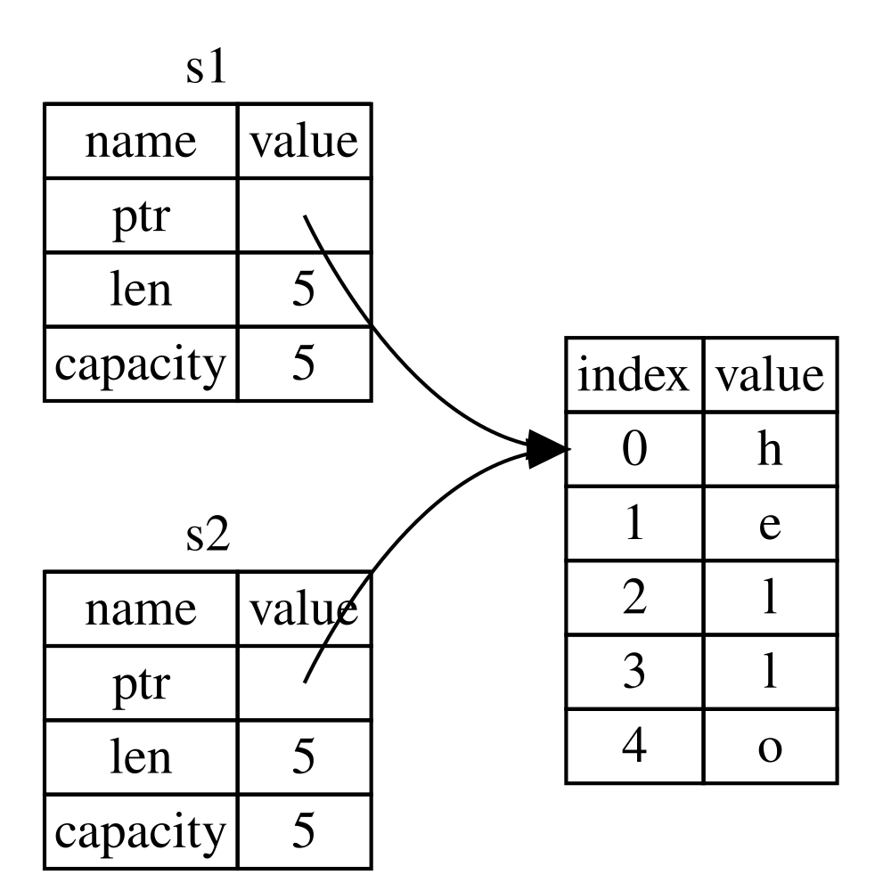
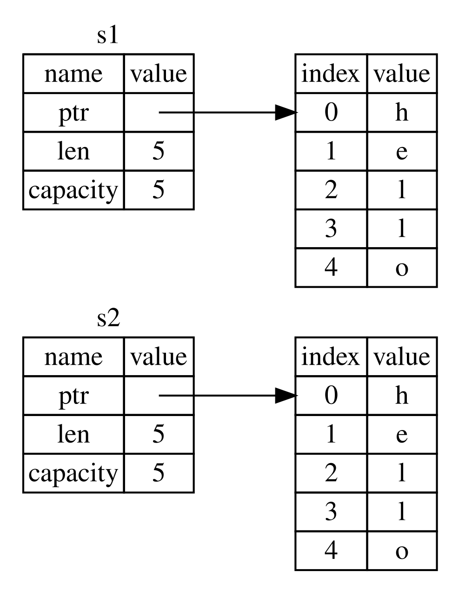

Bab 4.1
Apa itu Ownership?
Ownership adalah sekumpulan aturan yang mengatur bagaimana program Rust mengelola memori. Semua program harus mengelola cara mereka memakai memori komputer selagi berjalan. Beberapa bahasa punya garbage collection yang secara berkala mencari memori yang sudah tidak dipakai lagi selama program berjalan; di bahasa lain, programmer harus secara eksplisit mengalokasikan dan membebaskan memori itu. Rust memakai pendekatan ketiga: memori dikelola lewat sebuah sistem ownership dengan sekumpulan aturan yang diperiksa compiler. Kalau ada aturan yang dilanggar, programnya tidak akan bisa dikompilasi. Tidak satu pun fitur ownership yang akan memperlambat programmu saat berjalan.
Karena ownership adalah konsep baru bagi banyak programmer, memang butuh waktu untuk terbiasa. Kabar baiknya, semakin berpengalaman kamu dengan Rust dan aturan sistem ownership-nya, semakin mudah kamu akan menemukan dirimu secara alami menulis kode yang aman dan efisien. Terus semangat!
Ketika kamu memahami ownership, kamu akan punya fondasi kokoh untuk memahami fitur-fitur yang membuat Rust unik. Di bab ini, kamu akan belajar ownership dengan mengerjakan beberapa contoh yang berfokus pada struktur data yang sangat umum: string.
ℹ️ Stack dan Heap
Banyak bahasa pemrograman tidak mengharuskanmu memikirkan stack dan heap terlalu sering. Tapi di bahasa systems programming seperti Rust, apakah sebuah nilai berada di stack atau heap memengaruhi perilaku bahasa itu dan kenapa kamu harus membuat keputusan tertentu. Bagian dari ownership akan dijelaskan dalam kaitannya dengan stack dan heap nanti di bab ini, jadi berikut penjelasan singkat sebagai persiapan.
Stack dan heap sama-sama bagian dari memori yang tersedia untuk kodemu pakai saat runtime, tapi keduanya terstruktur dengan cara berbeda. Stack menyimpan nilai sesuai urutan ia menerimanya dan menghapus nilai dengan urutan terbalik. Ini disebut last in, first out (LIFO). Bayangkan tumpukan piring: ketika kamu menambah piring, kamu meletakkannya di paling atas tumpukan, dan ketika kamu butuh piring, kamu ambil dari paling atas. Menambah atau mengambil piring dari tengah atau bawah tidak akan bekerja dengan baik! Menambahkan data disebut pushing onto the stack, dan menghapus data disebut popping off the stack. Semua data yang disimpan di stack harus punya ukuran yang sudah diketahui dan tetap. Data dengan ukuran yang tidak diketahui saat compile-time, atau ukurannya bisa berubah, harus disimpan di heap.
Heap kurang terorganisir: ketika kamu menaruh data di heap, kamu meminta sejumlah ruang tertentu. Memory allocator mencari tempat kosong di heap yang cukup besar, menandainya sedang dipakai, dan mengembalikan sebuah pointer — alamat lokasi itu. Proses ini disebut allocating on the heap, sering disingkat allocating saja (push ke stack tidak dianggap allocating). Karena pointer ke heap punya ukuran tetap yang sudah diketahui, kamu bisa menyimpan pointer itu di stack, tapi kalau kamu ingin data aslinya, kamu harus mengikuti pointer itu. Bayangkan sedang duduk di sebuah restoran. Saat masuk, kamu menyebutkan jumlah orang di rombonganmu, dan host mencari meja kosong yang muat untuk semua orang lalu mengantarmu ke sana. Kalau ada anggota rombongan yang datang terlambat, mereka bisa bertanya di mana kamu duduk untuk menemukanmu.
Push ke stack lebih cepat daripada allocating di heap karena allocator tidak pernah perlu mencari tempat untuk menyimpan data baru — lokasinya selalu di paling atas stack. Sebaliknya, mengalokasikan ruang di heap butuh lebih banyak kerja karena allocator harus lebih dulu mencari ruang yang cukup besar untuk menampung data itu, lalu melakukan pembukuan untuk mempersiapkan alokasi berikutnya.
Mengakses data di heap umumnya lebih lambat daripada mengakses data di stack karena kamu harus mengikuti sebuah pointer untuk sampai ke sana. Prosesor modern lebih cepat kalau mereka tidak banyak "melompat-lompat" di memori. Melanjutkan analoginya, bayangkan seorang pelayan restoran mengambil pesanan dari banyak meja. Paling efisien mengambil semua pesanan di satu meja dulu sebelum pindah ke meja berikutnya. Mengambil pesanan dari meja A, lalu meja B, lalu A lagi, lalu B lagi, akan jauh lebih lambat. Dengan logika yang sama, prosesor biasanya bisa bekerja lebih baik kalau ia memproses data yang berdekatan satu sama lain (seperti di stack) daripada yang berjauhan (seperti bisa terjadi di heap).
Ketika kodemu memanggil sebuah fungsi, nilai-nilai yang dioper ke fungsi itu (termasuk, mungkin saja, pointer ke data di heap) dan variabel lokal fungsi itu di-push ke stack. Ketika fungsinya selesai, nilai-nilai itu di-pop dari stack.
Melacak bagian kode mana yang memakai data apa di heap, meminimalkan jumlah data duplikat di heap, dan membersihkan data yang tidak dipakai lagi di heap supaya kamu tidak kehabisan ruang — semua ini adalah masalah yang diselesaikan ownership. Begitu kamu memahami ownership, kamu tidak akan perlu terlalu sering memikirkan stack dan heap. Tapi mengetahui bahwa tujuan utama ownership adalah mengelola data di heap bisa membantu menjelaskan kenapa ownership bekerja seperti yang akan kamu lihat.
Aturan Ownership
Pertama, mari lihat aturan ownership-nya. Ingat baik-baik aturan ini selagi kita mengerjakan contoh yang mengilustrasikannya:
- Setiap nilai di Rust punya sebuah owner (pemilik).
- Hanya boleh ada satu owner dalam satu waktu.
- Ketika owner keluar dari scope, nilainya akan di-drop (dibuang/dibersihkan).
Scope Variabel
Sebagai contoh pertama ownership, kita akan lihat scope dari beberapa variabel. Scope adalah rentang dalam program di mana sebuah item dianggap valid. Perhatikan variabel berikut:
let s = "hello";
Variabel s merujuk ke sebuah string literal, di mana
nilai string-nya sudah hardcoded di dalam teks programnya. Variabel
ini valid mulai dari titik ia dideklarasikan sampai akhir scope
saat ini. Berikut contoh program dengan komentar yang menandai di
mana variabel s valid:
{ // s belum valid di sini, karena belum dideklarasikan
let s = "hello"; // s valid mulai dari titik ini
// lakukan sesuatu dengan s
} // scope ini sudah berakhir, dan s sudah tidak valid lagiDengan kata lain, ada dua titik waktu penting di sini:
- Ketika
smasuk ke dalam scope, ia valid. - Ia tetap valid sampai ia keluar dari scope-nya.
Sejauh ini, hubungan antara scope dan kapan variabel valid mirip
dengan bahasa pemrograman lain. Sekarang kita akan membangun di atas
pemahaman ini dengan memperkenalkan tipe String.
Tipe String
Untuk mengilustrasikan aturan ownership, kita butuh tipe data yang
lebih kompleks dari yang sudah kita bahas di subbab 3.2 (Tipe Data).
Tipe-tipe yang sudah dibahas punya ukuran yang sudah diketahui, bisa
disimpan di stack dan di-pop ketika scope-nya berakhir, dan bisa
disalin dengan cepat dan trivial untuk membuat instance baru yang
independen kalau bagian kode lain perlu memakai nilai yang sama di
scope berbeda. Tapi kita ingin melihat data yang disimpan di heap
dan mengeksplorasi bagaimana Rust tahu kapan harus membersihkan data
itu — dan tipe String adalah contoh yang bagus.
Kita akan fokus pada bagian String yang berkaitan
dengan ownership. Aspek-aspek ini juga berlaku untuk tipe data
kompleks lain, baik yang disediakan standard library maupun yang
kamu buat sendiri. Kita akan bahas aspek String di
luar ownership di Bab 8.
Kita sudah melihat string literal, di mana nilai string sudah
hardcoded di programnya. String literal itu praktis, tapi tidak
cocok untuk semua situasi di mana kita mungkin ingin memakai teks.
Salah satu alasannya: mereka immutable. Alasan lain: tidak semua
nilai string bisa diketahui saat kita menulis kode — misalnya,
bagaimana kalau kita ingin menerima input pengguna dan
menyimpannya? Untuk situasi seperti ini, Rust punya tipe
String. Tipe ini mengelola data yang dialokasikan di
heap dan karena itu mampu menyimpan sejumlah teks yang tidak
diketahui saat compile-time. Kamu bisa membuat String
dari sebuah string literal memakai fungsi from:
let s = String::from("hello");
Operator titik dua ganda :: memungkinkan kita
me-namespace fungsi from ini di bawah tipe
String, alih-alih memakai semacam nama seperti
string_from. Kita akan bahas sintaks ini lebih lanjut
di subbab 5.3 (Sintaks Method), dan ketika kita membahas namespacing
dengan module di Bab 7.
Jenis string ini bisa diubah (mutable):
let mut s = String::from("hello");
s.push_str(", world!"); // push_str() menambahkan sebuah literal ke String
println!("{s}"); // ini akan mencetak `hello, world!`
Jadi, apa bedanya di sini? Kenapa String bisa diubah
tapi literal tidak? Bedanya ada pada bagaimana kedua tipe ini
menangani memori.
Memori dan Alokasi
Untuk string literal, kita tahu isinya saat compile-time, jadi teksnya langsung hardcoded ke dalam file executable final. Inilah kenapa string literal cepat dan efisien. Tapi sifat-sifat ini hanya berasal dari immutability string literal itu. Sayangnya, kita tidak bisa menaruh sekumpulan memori ke dalam binary untuk setiap potongan teks yang ukurannya tidak diketahui saat compile-time dan ukurannya bisa berubah selagi program berjalan.
Dengan tipe String, untuk mendukung teks yang mutable
dan bisa bertambah panjang, kita perlu mengalokasikan sejumlah
memori di heap, yang tidak diketahui saat compile-time, untuk
menampung isinya. Ini berarti:
- Memori harus diminta dari memory allocator saat runtime.
- Kita butuh cara mengembalikan memori ini ke allocator ketika kita sudah selesai memakai
Stringkita.
Bagian pertama dilakukan oleh kita: ketika kita memanggil
String::from, implementasinya meminta memori yang
dibutuhkan. Ini kurang lebih universal di bahasa pemrograman.
Tapi, bagian kedua berbeda. Di bahasa dengan garbage collector
(GC), GC melacak dan membersihkan memori yang sudah tidak
dipakai lagi, dan kita tidak perlu memikirkannya. Di kebanyakan
bahasa tanpa GC, tanggung jawab kita untuk mengenali kapan memori
sudah tidak dipakai lagi dan memanggil kode untuk membebaskannya
secara eksplisit, sama seperti saat kita memintanya. Melakukan ini
dengan benar secara historis adalah masalah pemrograman yang sulit.
Kalau kita lupa, kita akan membuang-buang memori. Kalau kita
lakukan terlalu awal, kita akan punya variabel yang tidak valid.
Kalau kita lakukan dua kali, itu juga bug. Kita perlu memasangkan
tepat satu allocate dengan tepat satu free.
Rust mengambil jalur berbeda: memori otomatis dikembalikan begitu
variabel yang memilikinya keluar dari scope. Berikut versi contoh
scope kita sebelumnya, tapi memakai String alih-alih
string literal:
{
let s = String::from("hello"); // s valid mulai dari titik ini
// lakukan sesuatu dengan s
} // scope ini sudah berakhir, dan s
// sudah tidak valid lagi
Ada titik alami di mana kita bisa mengembalikan memori yang
dibutuhkan String kita ke allocator: ketika
s keluar dari scope. Ketika sebuah variabel keluar
dari scope, Rust memanggil sebuah fungsi khusus untuk kita. Fungsi
ini disebut drop, dan di sinilah penulis
String bisa menaruh kode untuk mengembalikan
memorinya. Rust memanggil drop secara otomatis di
kurung kurawal penutup.
ℹ️ RAII di C++
Di C++, pola membebaskan resource di akhir lifetime sebuah item
kadang disebut Resource Acquisition Is Initialization (RAII).
Fungsi drop di Rust akan terasa familier kalau kamu
pernah memakai pola RAII.
Pola ini punya dampak besar pada cara kode Rust ditulis. Mungkin sekarang terlihat sederhana, tapi perilaku kode bisa jadi tidak terduga dalam situasi lebih rumit ketika kita ingin beberapa variabel memakai data yang sama yang sudah kita alokasikan di heap. Mari eksplorasi beberapa situasi seperti itu sekarang.
Variabel dan Data Berinteraksi lewat Move
Banyak variabel bisa berinteraksi dengan data yang sama dengan cara berbeda-beda di Rust. Contoh berikut memakai integer:
let x = 5;
let y = x;
Kita mungkin bisa menebak apa yang terjadi: "Ikat nilai
5 ke x; lalu, buat salinan nilai di
x dan ikat ke y." Sekarang kita punya dua
variabel, x dan y, dan keduanya sama
dengan 5. Ini memang yang terjadi, karena integer
adalah nilai sederhana dengan ukuran tetap yang sudah diketahui,
dan kedua nilai 5 itu di-push ke stack.
Sekarang mari lihat versi String:
let s1 = String::from("hello");
let s2 = s1;
Ini terlihat sangat mirip, jadi kita mungkin berasumsi cara
kerjanya sama: baris kedua akan membuat salinan nilai di
s1 dan mengikatnya ke s2. Tapi bukan
persis itu yang terjadi.
Sebuah String tersusun dari tiga bagian: sebuah
pointer ke memori yang menyimpan isi string-nya, sebuah panjang
(length), dan sebuah kapasitas (capacity). Kelompok data ini
disimpan di stack. Data di heap menyimpan isinya.

Length adalah berapa banyak memori, dalam byte, yang
sedang dipakai isi String saat ini. Capacity
adalah total memori, dalam byte, yang sudah diterima
String dari allocator. Beda antara length dan capacity
penting, tapi tidak dalam konteks ini, jadi untuk sekarang boleh
diabaikan dulu.
Ketika kita menetapkan s1 ke s2, data
String-nya disalin — artinya kita menyalin pointer,
length, dan capacity yang ada di stack. Kita tidak
menyalin data di heap yang ditunjuk pointer itu. Dengan kata lain,
representasi data di memori terlihat seperti ini:

Representasinya bukan seperti berikut, yang akan jadi tampilan memori kalau Rust justru ikut menyalin data heap-nya:

Kalau Rust melakukan ini, operasi s2 = s1 bisa sangat
mahal secara performa runtime kalau data di heap-nya besar.
Sebelumnya, kita bilang ketika sebuah variabel keluar dari scope,
Rust otomatis memanggil fungsi drop dan membersihkan
memori heap untuk variabel itu. Tapi Gambar 4-2 menunjukkan kedua
pointer data menunjuk ke lokasi yang sama. Ini masalah: ketika
s2 dan s1 keluar dari scope, keduanya
akan sama-sama mencoba membebaskan memori yang sama. Ini dikenal
sebagai error double free, salah satu bug
keamanan memori yang sudah kita sebutkan sebelumnya. Membebaskan
memori dua kali bisa menyebabkan korupsi memori, yang berpotensi
mengarah ke kerentanan keamanan.
Untuk memastikan keamanan memori, setelah baris
let s2 = s1;, Rust menganggap s1 sudah
tidak valid lagi. Karena itu, Rust tidak perlu membebaskan apa pun
ketika s1 keluar dari scope. Lihat apa yang terjadi
kalau kamu mencoba memakai s1 setelah s2
dibuat — ini tidak akan bekerja:
let s1 = String::from("hello");
let s2 = s1;
println!("{s1}, world!");Kamu akan mendapat error seperti ini karena Rust mencegahmu memakai referensi yang sudah tidak berlaku:
$ cargo run
Compiling ownership v0.1.0 (file:///projects/ownership)
error[E0382]: borrow of moved value: `s1`
--> src/main.rs:5:16
|
2 | let s1 = String::from("hello");
| -- move occurs because `s1` has type `String`, which does not implement the `Copy` trait
3 | let s2 = s1;
| -- value moved here
4 |
5 | println!("{s1}, world!");
| ^^ value borrowed here after move
|
help: consider cloning the value if the performance cost is acceptable
|
3 | let s2 = s1.clone();
| ++++++++
For more information about this error, try `rustc --explain E0382`.
error: could not compile `ownership` (bin "ownership") due to 1 previous error
Kalau kamu pernah mendengar istilah shallow copy dan
deep copy saat bekerja dengan bahasa lain, konsep menyalin
pointer, length, dan capacity tanpa menyalin datanya mungkin
terdengar seperti membuat shallow copy. Tapi karena Rust juga
membuat variabel pertamanya tidak valid, alih-alih disebut shallow
copy, ini dikenal sebagai move. Di contoh ini,
kita akan bilang s1 di-move ke s2.
Jadi, yang sebenarnya terjadi terlihat seperti ini:

Itu menyelesaikan masalah kita! Dengan hanya s2 yang
valid, ketika ia keluar dari scope, hanya dia sendiri yang akan
membebaskan memorinya, dan selesai.
Selain itu, ada pilihan desain yang tersirat dari ini: Rust tidak akan pernah otomatis membuat salinan "dalam" (deep copy) dari datamu. Karena itu, penyalinan otomatis apa pun bisa diasumsikan murah secara performa runtime.
Scope dan Assignment
Kebalikannya juga berlaku untuk hubungan antara scoping, ownership,
dan pembebasan memori lewat fungsi drop. Ketika kamu
menetapkan nilai yang sepenuhnya baru ke variabel yang sudah ada,
Rust akan memanggil drop dan langsung membebaskan
memori nilai aslinya. Perhatikan kode ini:
let mut s = String::from("hello");
s = String::from("ahoy");
println!("{s}, world!");
Kita awalnya mendeklarasikan variabel s dan
mengikatnya ke String bernilai "hello".
Lalu, kita segera membuat String baru bernilai
"ahoy" dan menetapkannya ke s. Di titik
ini, tidak ada apa pun lagi yang merujuk ke nilai aslinya di heap.

String aslinya jadi langsung keluar dari scope. Rust akan
menjalankan fungsi drop padanya dan memorinya langsung
dibebaskan. Ketika kita mencetak nilainya di akhir, hasilnya adalah
"ahoy, world!".
Variabel dan Data Berinteraksi lewat Clone
Kalau kita memang ingin menyalin dalam (deep copy) data
heap dari sebuah String, bukan cuma data stack-nya,
kita bisa memakai method umum bernama clone. Kita akan
bahas sintaks method di Bab 5, tapi karena method adalah fitur umum
di banyak bahasa pemrograman, kamu mungkin sudah pernah melihatnya.
Berikut contoh method clone dipakai:
let s1 = String::from("hello");
let s2 = s1.clone();
println!("s1 = {s1}, s2 = {s2}");Ini bekerja dengan baik dan secara eksplisit menghasilkan perilaku seperti Gambar 4-3, di mana data heap-nya memang disalin.
Ketika kamu melihat pemanggilan clone, kamu tahu
beberapa kode sembarang sedang dijalankan, dan kode itu mungkin
mahal. Ini indikator visual bahwa ada sesuatu yang berbeda sedang
terjadi.
Data Stack Saja: Trait Copy
Ada satu hal lagi yang belum kita bahas. Kode memakai integer berikut — sebagian sudah kita lihat sebelumnya — bekerja dan valid:
let x = 5;
let y = x;
println!("x = {x}, y = {y}");
Tapi kode ini sepertinya bertentangan dengan yang baru saja kita
pelajari: kita tidak memanggil clone, tapi
x tetap valid dan tidak di-move ke y.
Alasannya: tipe seperti integer yang punya ukuran diketahui saat
compile-time sepenuhnya disimpan di stack, jadi salinan nilai
aslinya cepat dibuat. Itu berarti tidak ada alasan kita ingin
mencegah x tetap valid setelah kita membuat variabel
y. Dengan kata lain, tidak ada beda antara deep copy
dan shallow copy di sini, jadi memanggil clone tidak
akan melakukan apa pun yang berbeda dari shallow copy biasa, dan
kita bisa melewatkannya.
Rust punya anotasi khusus bernama trait Copy yang bisa
kita taruh pada tipe yang disimpan di stack, seperti integer (kita
akan bahas trait lebih lanjut di Bab 10). Kalau sebuah tipe
mengimplementasikan trait Copy, variabel yang
memakainya tidak di-move, melainkan disalin secara trivial,
sehingga tetap valid setelah ditetapkan ke variabel lain.
Rust tidak akan mengizinkan kita menganotasi sebuah tipe dengan
Copy kalau tipe itu, atau bagian mana pun darinya,
sudah mengimplementasikan trait Drop. Kalau tipe itu
butuh sesuatu yang khusus terjadi ketika nilainya keluar dari
scope, dan kita menambahkan anotasi Copy pada tipe
itu, kita akan mendapat error compile-time. Untuk belajar cara
menambahkan anotasi Copy ke tipemu sendiri, lihat
"Derivable Traits" di Lampiran C.
Jadi, tipe apa saja yang mengimplementasikan trait Copy?
Kamu bisa memeriksa dokumentasi tipe tertentu untuk memastikan,
tapi sebagai aturan umum, kelompok nilai scalar sederhana apa pun
bisa mengimplementasikan Copy, dan apa pun yang butuh
alokasi atau berupa semacam resource tidak bisa mengimplementasikan
Copy. Berikut beberapa tipe yang mengimplementasikan
Copy:
- Semua tipe integer, seperti
u32. - Tipe Boolean,
bool, dengan nilaitruedanfalse. - Semua tipe floating-point, seperti
f64. - Tipe karakter,
char. - Tuple, kalau hanya berisi tipe yang juga mengimplementasikan
Copy. Misalnya(i32, i32)mengimplementasikanCopy, tapi(i32, String)tidak.
Kenapa let y = x; tidak membuat x tidak valid, kalau x bertipe i32, sementara let s2 = s1; membuat s1 tidak valid kalau s1 bertipe String?
Ownership dan Fungsi
Mekanisme mengoper sebuah nilai ke fungsi mirip dengan mekanisme saat menetapkan nilai ke sebuah variabel. Mengoper variabel ke fungsi akan melakukan move atau copy, sama seperti assignment. Contoh berikut punya anotasi yang menunjukkan kapan variabel masuk dan keluar dari scope:
Nama berkas: src/main.rs
fn main() {
let s = String::from("hello"); // s masuk ke scope
takes_ownership(s); // nilai s dipindah (move) ke fungsi ini...
// ...jadi s sudah tidak valid lagi di sini
let x = 5; // x masuk ke scope
makes_copy(x); // Karena i32 mengimplementasikan trait Copy,
// x TIDAK di-move ke fungsi ini,
// jadi x masih boleh dipakai setelahnya.
} // Di sini, x keluar dari scope, lalu s. Tapi karena nilai s sudah di-move,
// tidak ada hal khusus yang terjadi.
fn takes_ownership(some_string: String) { // some_string masuk ke scope
println!("{some_string}");
} // Di sini, some_string keluar dari scope dan `drop` dipanggil. Memori
// di baliknya dibebaskan.
fn makes_copy(some_integer: i32) { // some_integer masuk ke scope
println!("{some_integer}");
} // Di sini, some_integer keluar dari scope. Tidak ada hal khusus yang terjadi.
Kalau kita coba memakai s setelah pemanggilan
takes_ownership, Rust akan melempar error
compile-time. Pengecekan statis ini melindungi kita dari kesalahan.
Coba tambahkan kode ke main yang memakai s
dan x untuk melihat di mana kamu bisa memakainya dan
di mana aturan ownership mencegahmu melakukannya.
Nilai Kembalian dan Scope
Mengembalikan nilai juga bisa memindahkan (transfer) ownership. Berikut contoh sebuah fungsi yang mengembalikan sebuah nilai, dengan anotasi serupa:
Nama berkas: src/main.rs
fn main() {
let s1 = gives_ownership(); // gives_ownership memindahkan nilai
// kembaliannya ke s1
let s2 = String::from("hello"); // s2 masuk ke scope
let s3 = takes_and_gives_back(s2); // s2 dipindah ke
// takes_and_gives_back, yang juga
// memindahkan nilai kembaliannya ke s3
} // Di sini, s3 keluar dari scope dan di-drop. s2 sudah dipindah, jadi tidak
// terjadi apa-apa. s1 keluar dari scope dan di-drop.
fn gives_ownership() -> String { // gives_ownership akan memindahkan
// nilai kembaliannya ke fungsi yang
// memanggilnya
let some_string = String::from("yours"); // some_string masuk ke scope
some_string // some_string dikembalikan dan
// dipindah keluar ke fungsi pemanggil
}
// Fungsi ini menerima sebuah String dan mengembalikan sebuah String.
fn takes_and_gives_back(a_string: String) -> String {
// a_string masuk ke scope
a_string // a_string dikembalikan dan dipindah keluar ke fungsi pemanggil
}
Ownership sebuah variabel selalu mengikuti pola yang sama:
menetapkan sebuah nilai ke variabel lain memindahkannya (move).
Ketika sebuah variabel yang berisi data di heap keluar dari scope,
nilainya akan dibersihkan oleh drop kecuali
ownership datanya sudah dipindah ke variabel lain.
Walau ini bekerja, mengambil ownership lalu mengembalikan ownership di setiap fungsi cukup merepotkan. Bagaimana kalau kita ingin sebuah fungsi memakai sebuah nilai tapi tidak mengambil ownership-nya? Cukup menjengkelkan kalau apa pun yang kita oper juga harus dioper kembali kalau kita ingin memakainya lagi, ditambah data hasil dari badan fungsi yang mungkin ingin kita kembalikan juga.
Rust memang mengizinkan kita mengembalikan banyak nilai memakai tuple:
Nama berkas: src/main.rs
fn main() {
let s1 = String::from("hello");
let (s2, len) = calculate_length(s1);
println!("Panjang dari '{s2}' adalah {len}.");
}
fn calculate_length(s: String) -> (String, usize) {
let length = s.len(); // len() mengembalikan panjang sebuah String
(s, length)
}Tapi ini terlalu banyak seremoni dan kerja untuk konsep yang seharusnya umum. Untungnya, Rust punya fitur untuk memakai sebuah nilai tanpa memindahkan ownership-nya: referensi.
Ringkasan
- Tiga aturan ownership: setiap nilai punya satu owner, hanya satu owner dalam satu waktu, nilai di-drop saat owner-nya keluar dari scope.
- Menetapkan nilai heap (seperti
String) ke variabel lain melakukan move — variabel lama jadi tidak valid, mencegah double free. .clone()secara eksplisit melakukan deep copy data heap, kalau kamu memang butuh dua salinan independen.- Tipe yang seluruhnya di stack (integer, bool, float, char, tuple berisi tipe Copy) mengimplementasikan trait
Copy— disalin, bukan di-move. - Mengoper nilai ke/dari fungsi mengikuti aturan move/copy yang sama seperti assignment biasa.